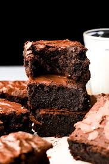

Brownies

This is the worlds most delicous brownies
Brownies are a choclate based desert.
They come in 2 forms fudgy or cakey (fudgy is wayyy better) and include things like nuts, frosting, choclate, and sometime other ingredients
They are often times made from brown sugur and vanilla instead of the normal recipe which is called a blondie.
Brownies are thought to have orginated from a lady named bertha palmer in the city of Chicago.
These probably tasted worse than the modern ones.
Ingredients
- 2 cups of sugar
- 1 1/2 cup of all purpose flour
- 1 cup of melted butter
- 4 eggs
- 1/2 cup of cocoa powder
- 1 teaspoon of vanilla extract
- 1/2 teaspoon of baking powder
- 1/2 teaspoon of salt
- 1/2 cup of chopped walnuts
Steps
- Preheat the oven to 350 degrees F
- Grease a 9x13 inch pan
- Mix the sugur, flour, melted butter, eggs, cocoa powder, vanilla, baking powder, and salt in a large bowl until combined.
- Fold in the chopped walnuts into the mixture
- Spread the batter onto the greased pan
- bake in oven unril the top is dry and edeges have moved away from the sides of the pan. This shoudl take around 20-30 min